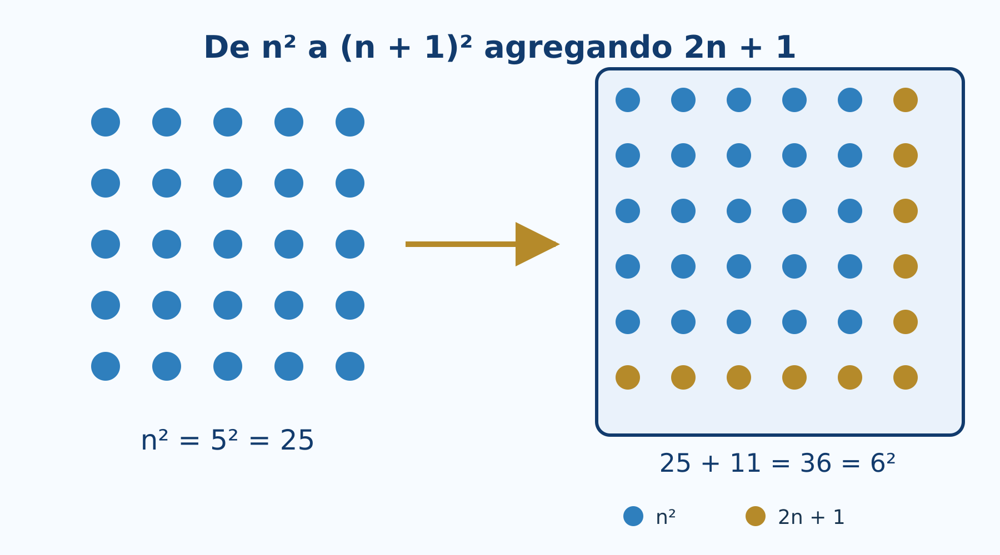
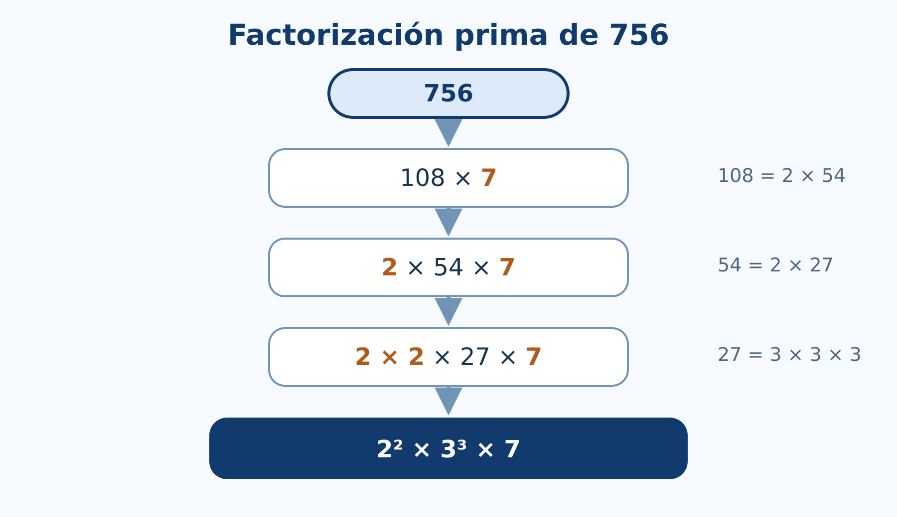
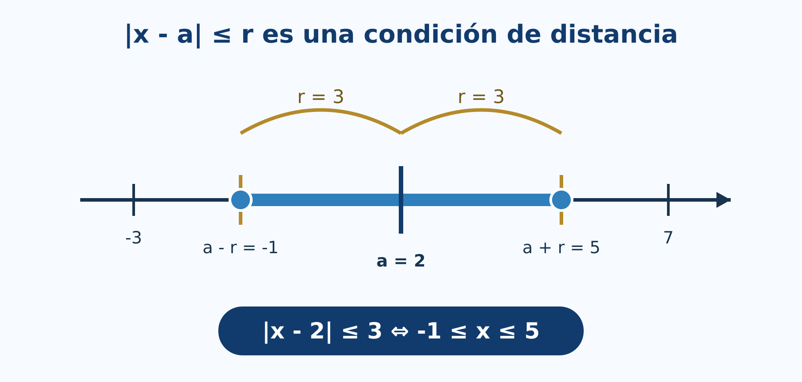

2 Números enteros y reales
Experimentación con R, algoritmos y recta numérica
Introducción
Este capítulo convierte propiedades de los enteros y los reales en experimentos reproducibles. R permitirá generar ejemplos, ejecutar algoritmos, detectar patrones y visualizar distancias. La comprobación computacional será una herramienta para formular y revisar conjeturas; las afirmaciones para infinitos números continuarán requiriendo demostración.
Todo el código principal usa R base (R Core Team 2026). Puede ejecutarse en RStudio o en Google Colab sin instalar paquetes.
El cuaderno sigue las secciones 2.1-2.8, incluye algoritmos de divisibilidad y primos, experimentos sobre precisión numérica y gráficas de exponentes y valor absoluto.
Objetivos
Al finalizar, el lector podrá:
- representar enteros y operar con cociente y residuo en R;
- experimentar con sucesiones que se demuestran por inducción;
- programar los algoritmos de Euclides y Euclides extendido;
- detectar primos y obtener factorizaciones;
- distinguir cálculo exacto simbólico de aproximación numérica;
- explorar propiedades de orden y densidad en la recta real;
- evaluar potencias con exponentes enteros y racionales atendiendo a su dominio;
- resolver e interpretar inecuaciones con valor absoluto.
2.1 Propiedades de los números enteros
Enteros y almacenamiento en R
R distingue valores enteros escritos con el sufijo L y valores numéricos almacenados, normalmente, en doble precisión.
z <- c(-3L, -2L, -1L, 0L, 1L, 2L, 3L)
typeof(z)
typeof(3)
typeof(3L)Para los ejemplos habituales ambos tipos producen las mismas operaciones. Sin embargo, una computadora representa un conjunto finito de valores; no contiene literalmente todos los elementos de \(\mathbb Z\) ni de \(\mathbb R\).
.Machine$integer.max
.Machine$double.xmaxLos enteros matemáticos no tienen cota superior. Los enteros almacenados en un tipo de computadora sí la tienen. Cuando un cálculo excede el rango o la precisión disponible, el resultado puede desbordarse o redondearse.
Comprobación de propiedades
Elegimos tres enteros y comparamos ambos lados de las propiedades asociativa y distributiva.
a <- -7L
b <- 5L
c <- 3L
data.frame(
propiedad = c("asociativa de la suma", "distributiva"),
izquierda = c((a + b) + c, a * (b + c)),
derecha = c(a + (b + c), a * b + a * c)
)La igualdad para estos valores es una verificación, no una demostración para todos los enteros.
Orden en la recta numérica
x <- -6:6
plot(x, rep(0, length(x)), pch = 19,
xlab = "entero", ylab = "", yaxt = "n",
main = "Enteros en la recta numérica")
abline(h = 0, col = "gray50")
text(x, rep(0.08, length(x)), labels = x, cex = 0.8)En la recta, \(a<b\) significa que \(a\) aparece a la izquierda de \(b\). Sumar el mismo número traslada ambos puntos sin cambiar su orden.
2.2 Inducción matemática
Explorar antes de demostrar
Consideremos la conjetura
\[ 1+3+\cdots +(2n-1)=n^2. \]
R permite comparar ambos lados para los primeros valores.
n <- 1:12
lado_izquierdo <- cumsum(2 * n - 1)
lado_derecho <- n^2
data.frame(
n = n,
suma_impares = lado_izquierdo,
cuadrado = lado_derecho,
diferencia = lado_izquierdo - lado_derecho
)Que la columna diferencia sea cero sugiere la identidad, pero la demostración inductiva explica por qué se conserva al pasar de \(n\) a \(n+1\).

Función para revisar una identidad
revisar_identidad <- function(n_max = 50L) {
n <- seq_len(n_max)
izquierda <- cumsum(2 * n - 1)
data.frame(
n = n,
izquierda = izquierda,
derecha = n^2,
coincide = izquierda == n^2
)
}
resultado <- revisar_identidad(20L)
all(resultado$coincide)Interactivo: construir el siguiente cuadrado
Seleccione \(n\) y observe cómo \(n^2\) puntos, más una franja de \(2n+1\) puntos, forman \((n+1)^2\).
Lo que R no demuestra
No existe una instrucción que enumere todos los naturales y termine. La prueba formal requiere:
- comprobar el caso base;
- suponer la fórmula para un entero arbitrario \(k\);
- deducir la fórmula para \(k+1\).
R ayuda a encontrar errores y contraejemplos. Si una afirmación falla para algún valor ensayado, queda refutada; si no falla, todavía necesita demostración.
2.3 Divisibilidad
Cociente y residuo
En R, %/% calcula el cociente entero y %% el residuo.
a <- c(47L, -47L)
d <- 6L
q <- a %/% d
r <- a %% d
data.frame(
a = a,
d = d,
q = q,
r = r,
reconstruccion = d * q + r
)Observe que R elige el residuo de modo que \(0\le r<d\) cuando \(d>0\).
Una función de divisibilidad puede escribirse así:
divide <- function(a, b) {
if (a == 0) stop("El divisor no puede ser cero")
b %% a == 0
}
c(`7 divide 42` = divide(7L, 42L),
`7 divide 40` = divide(7L, 40L))Algoritmo de Euclides
euclides <- function(a, b) {
a <- abs(as.integer(a))
b <- abs(as.integer(b))
pasos <- data.frame(
dividendo = integer(), divisor = integer(),
cociente = integer(), residuo = integer()
)
while (b != 0L) {
q <- a %/% b
r <- a %% b
pasos <- rbind(
pasos,
data.frame(dividendo = a, divisor = b,
cociente = q, residuo = r)
)
a <- b
b <- r
}
list(mcd = a, pasos = pasos)
}
resultado <- euclides(252L, 198L)
resultado$pasos
resultado$mcd
Euclides extendido y coeficientes de Bézout
euclides_extendido <- function(a, b) {
viejo_r <- as.integer(a); r <- as.integer(b)
viejo_s <- 1L; s <- 0L
viejo_t <- 0L; t <- 1L
while (r != 0L) {
q <- viejo_r %/% r
aux <- viejo_r - q * r; viejo_r <- r; r <- aux
aux <- viejo_s - q * s; viejo_s <- s; s <- aux
aux <- viejo_t - q * t; viejo_t <- t; t <- aux
}
if (viejo_r < 0L) {
viejo_r <- -viejo_r
viejo_s <- -viejo_s
viejo_t <- -viejo_t
}
c(mcd = viejo_r, x = viejo_s, y = viejo_t)
}
bezout <- euclides_extendido(252L, 198L)
bezout
252L * bezout["x"] + 198L * bezout["y"]Interactivo: residuos sucesivos
Introduzca dos enteros positivos. El laboratorio muestra cada división y señala el último residuo no nulo.
2.4 Números primos y factorización
Prueba de primalidad por división
Para decidir si \(n\) es primo basta probar divisores hasta \(\sqrt n\).
es_primo <- function(n) {
n <- as.integer(n)
if (n < 2L) return(FALSE)
if (n == 2L) return(TRUE)
if (n %% 2L == 0L) return(FALSE)
limite <- floor(sqrt(n))
if (limite < 3L) return(TRUE)
candidatos <- seq.int(3L, limite, by = 2L)
!any(n %% candidatos == 0L)
}
sapply(1:30, es_primo)
(1:100)[sapply(1:100, es_primo)]Criba de Eratóstenes
La criba elimina múltiplos y conserva los primos no mayores que un límite.
criba <- function(n) {
n <- as.integer(n)
if (n < 2L) return(integer())
primo <- rep(TRUE, n)
primo[1] <- FALSE
limite <- floor(sqrt(n))
if (limite >= 2L) {
for (p in 2:limite) {
if (primo[p]) primo[seq.int(p * p, n, by = p)] <- FALSE
}
}
which(primo)
}
criba(100L)Factorización por divisiones sucesivas
factorizar <- function(n) {
n <- abs(as.integer(n))
if (n < 2L) return(integer())
factores <- integer()
d <- 2L
while (d * d <= n) {
while (n %% d == 0L) {
factores <- c(factores, d)
n <- n %/% d
}
d <- if (d == 2L) 3L else d + 2L
}
if (n > 1L) factores <- c(factores, n)
factores
}
factorizar(756L)
table(factorizar(756L))
MCD y MCM
mcd <- function(a, b) euclides(a, b)$mcd
mcm <- function(a, b) {
if (a == 0L || b == 0L) return(0L)
abs(a %/% mcd(a, b) * b)
}
a <- 840L
b <- 378L
c(mcd = mcd(a, b), mcm = mcm(a, b), producto = a * b)
mcd(a, b) * mcm(a, b) == a * b2.5 Números racionales y números reales
Representar una fracción exactamente
R base representa 1/3 mediante una aproximación de punto flotante. Para conservar una fracción exacta podemos guardar numerador y denominador reducidos.
fraccion <- function(num, den = 1L) {
if (den == 0L) stop("El denominador no puede ser cero")
num <- as.integer(num)
den <- as.integer(den)
if (den < 0L) { num <- -num; den <- -den }
g <- mcd(abs(num), den)
c(num = num %/% g, den = den %/% g)
}
fraccion(18L, 24L)
fraccion(-15L, -35L)Aproximación y precisión
El conocido ejemplo siguiente muestra que una igualdad matemáticamente correcta puede no ser exacta en aritmética binaria de punto flotante.
0.1 + 0.2
(0.1 + 0.2) == 0.3
all.equal(0.1 + 0.2, 0.3)Para comparar resultados numéricos se utiliza una tolerancia:
iguales_aprox <- function(x, y, tolerancia = 1e-12) {
abs(x - y) <= tolerancia
}
iguales_aprox(0.1 + 0.2, 0.3)Racionales e irracionales en la recta
valores <- c(0, 1/2, sqrt(2), 3/2, sqrt(3), 2)
etiquetas <- c("0", "1/2", "sqrt(2)", "3/2", "sqrt(3)", "2")
plot(valores, rep(0, length(valores)), pch = 19,
xlim = c(-0.1, 2.1), ylim = c(-0.35, 0.35),
axes = FALSE, xlab = "recta real", ylab = "")
axis(1)
abline(h = 0, col = "gray50")
text(valores, rep(0.12, length(valores)), etiquetas, cex = 0.8)
2.6 Propiedades de los números reales
Orden y operaciones
Podemos observar que multiplicar por un número negativo invierte una desigualdad.
a <- -2
b <- 5
c_positivo <- 3
c_negativo <- -3
data.frame(
comparacion = c("original", "multiplicar por positivo", "multiplicar por negativo"),
izquierda = c(a, a * c_positivo, a * c_negativo),
derecha = c(b, b * c_positivo, b * c_negativo),
menor = c(a < b,
a * c_positivo < b * c_positivo,
a * c_negativo < b * c_negativo)
)La tercera fila es falsa porque el sentido correcto es \(ac>bc\) cuando \(c<0\).
Densidad mediante puntos intermedios
Entre \(a<b\) podemos construir repetidamente puntos medios.
puntos_medios <- function(a, b, niveles = 4L) {
puntos <- c(a, b)
for (i in seq_len(niveles)) {
puntos <- sort(unique(c(puntos, head(puntos, -1) + diff(puntos) / 2)))
}
puntos
}
p <- puntos_medios(1, 2, 4L)
p
plot(p, rep(0, length(p)), pch = 19,
xlab = "x", ylab = "", yaxt = "n",
main = "Puntos intermedios entre 1 y 2")
abline(h = 0, col = "gray50")Aproximar \(\sqrt2\) por bisección
La completitud garantiza en \(\mathbb R\) la existencia del límite que llena el corte entre números con cuadrado menor y mayor que \(2\).
aproximar_raiz2 <- function(iteraciones = 20L) {
inferior <- 1
superior <- 2
historial <- data.frame()
for (i in seq_len(iteraciones)) {
medio <- (inferior + superior) / 2
historial <- rbind(
historial,
data.frame(i = i, inferior = inferior,
medio = medio, superior = superior,
error = medio^2 - 2)
)
if (medio^2 < 2) inferior <- medio else superior <- medio
}
historial
}
aproximacion <- aproximar_raiz2(15L)
tail(aproximacion, 5)
sqrt(2)2.7 Exponentes racionales y negativos
Potencias y dominio
data.frame(
expresion = c("2^(-3)", "16^(3/4)", "(-8)^(1/3)"),
valor_R = c(2^(-3), 16^(3/4), (-8)^(1/3))
)La última expresión muestra una dificultad: aunque la raíz cúbica real de \(-8\) es \(-2\), la operación directa puede producir NaN porque R evalúa potencias reales mediante logaritmos complejos fuera del dominio real positivo.
Podemos construir la raíz impar real:
raiz_impar <- function(x, n) {
if (n <= 0L || n %% 2L == 0L) stop("n debe ser impar positivo")
sign(x) * abs(x)^(1 / n)
}
raiz_impar(-8, 3L)Verificar leyes con restricciones
a <- 5
r <- 2/3
s <- -1/4
c(
producto = a^r * a^s,
suma_exponentes = a^(r + s),
diferencia = a^r * a^s - a^(r + s)
)Por redondeo, conviene comparar con all.equal().
all.equal(a^r * a^s, a^(r + s))Gráficas de potencias
x <- seq(0.05, 4, length.out = 400)
plot(x, x^2, type = "l", lwd = 2,
xlab = "x", ylab = "y", ylim = c(0, 8),
main = "Exponentes sobre bases positivas")
lines(x, sqrt(x), lwd = 2, lty = 2)
lines(x, x^(-1), lwd = 2, lty = 3)
legend("topright", c("x^2", "x^(1/2)", "x^(-1)"),
lty = c(1, 2, 3), lwd = 2, bty = "n")2.8 Valor absoluto
Distancia en la recta
x <- c(-5, -2, 0, 3, 7)
a <- 2
data.frame(x = x, centro = a, distancia = abs(x - a))
Resolver inecuaciones
Para resolver \(|x-a|\le r\), el intervalo solución es \([a-r,a+r]\) cuando \(r\ge0\).
intervalo_abs <- function(a, r, tipo = c("menor_igual", "mayor")) {
tipo <- match.arg(tipo)
if (r < 0) stop("r debe ser no negativo")
extremos <- c(a - r, a + r)
if (tipo == "menor_igual") {
list(intervalo = extremos,
descripcion = sprintf("[%g, %g]", extremos[1], extremos[2]))
} else {
list(intervalos = matrix(c(-Inf, extremos[1], extremos[2], Inf), nrow = 2, byrow = TRUE),
descripcion = sprintf("(-Inf, %g) U (%g, Inf)", extremos[1], extremos[2]))
}
}
intervalo_abs(a = 4, r = 7, tipo = "menor_igual")
intervalo_abs(a = -1, r = 2, tipo = "mayor")Comprobar la desigualdad triangular
set.seed(2026)
x <- runif(1000, -20, 20)
y <- runif(1000, -20, 20)
all(abs(x + y) <= abs(x) + abs(y) + 1e-12)
max(abs(x + y) - (abs(x) + abs(y)))La simulación busca contraejemplos en mil pares. No sustituye la demostración, pero ayuda a comprobar la implementación y a observar que la diferencia nunca resulta positiva.
Interactivo: centro, radio e intervalo
Cambie el centro \(a\), el radio \(r\) y el tipo de desigualdad. La recta numérica muestra si la solución es un intervalo central o dos regiones exteriores.
Laboratorio del capítulo
La versión incorpora tres actividades autónomas:
- Inducción visual: construye \((n+1)^2\) a partir de \(n^2\) y \(2n+1\).
- Algoritmo de Euclides: presenta cocientes y residuos hasta encontrar el MCD.
- Valor absoluto: transforma distancia en intervalos y regiones de la recta real.
Estas actividades funcionan en el sitio estático. El cuaderno Colab reúne además todos los algoritmos y experimentos de R.
Ejercicios con R
- Genere enteros aleatorios y compruebe las propiedades conmutativa, asociativa y distributiva.
- Construya una tabla para contrastar \(1+2+\cdots+n\) con \(n(n+1)/2\) hasta \(n=100\).
- Modifique
euclides()para aceptar una lista de enteros y calcular su MCD. - Use
euclides_extendido()para resolver una ecuación diofántica \(ax+by=c\). - Compare el tiempo de
es_primo()ycriba()al buscar primos hasta un límite creciente. - Escriba una función que devuelva la factorización como texto, por ejemplo
2^2 * 3^3 * 7. - Genere aproximaciones racionales de \(\sqrt2\) y grafique el error absoluto.
- Construya ejemplos donde comparar con
==falle, peroall.equal()sea verdadero. - Trace \(x^r\) para exponentes negativos, fraccionarios y enteros en sus dominios reales.
- Genere puntos al azar y compruebe la desigualdad triangular inversa.
Proyecto integrador
Desarrolle un pequeño analizador de enteros que reciba \(a\) y \(b\) y produzca:
- clasificación de signo y paridad;
- divisores positivos;
- factorización prima;
- tabla completa del algoritmo de Euclides;
- coeficientes de Bézout;
- MCD y MCM calculados de dos maneras;
- verificaciones automáticas de las identidades utilizadas;
- una interpretación escrita de los resultados.
El informe debe distinguir con claridad qué resultados son cálculos, cuáles son verificaciones finitas y cuáles dependen de un teorema general.
Síntesis
R hace visibles los algoritmos y permite experimentar con numerosos ejemplos. El residuo implementa divisibilidad; Euclides reduce el problema del MCD; la criba y las divisiones sucesivas exploran primos; las aproximaciones muestran la diferencia entre un real matemático y su representación finita. La inducción, la unicidad de la factorización y las propiedades de completitud siguen requiriendo razonamiento matemático.
2.9 Materiales complementarios del capítulo
Video del capítulo
El enlace al video se incorporará cuando esté disponible.
| Material | Descripción | Acceso |
|---|---|---|
| Presentación en PDF | Diapositivas del capítulo para consulta y exposición. | Enlace pendiente |
| Presentación editable | Diapositivas en formato PowerPoint. | Enlace pendiente |
| Infografía | Síntesis visual de los conceptos principales. | Enlace pendiente |
| Cuaderno de Google Colab | Cuaderno completo del capítulo con código y ejercicios en R. | Abrir en Google Colab |
Referencias del capítulo
La secuencia sigue la unidad 2 del programa de Álgebra Superior (Universidad Autónoma de San Luis Potosí, Facultad de Ciencias 2011). Los fundamentos se apoyan en Silva y Lazo (2007), Rosen (2019), Burton (2011) y Niven et al. (1991). Los algoritmos se implementan con R base (R Core Team 2026).